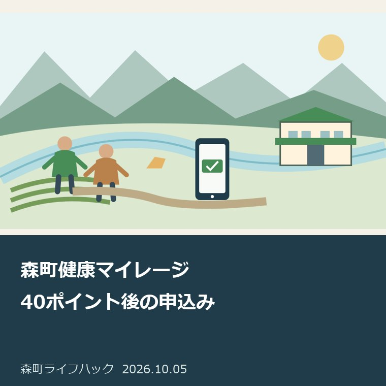
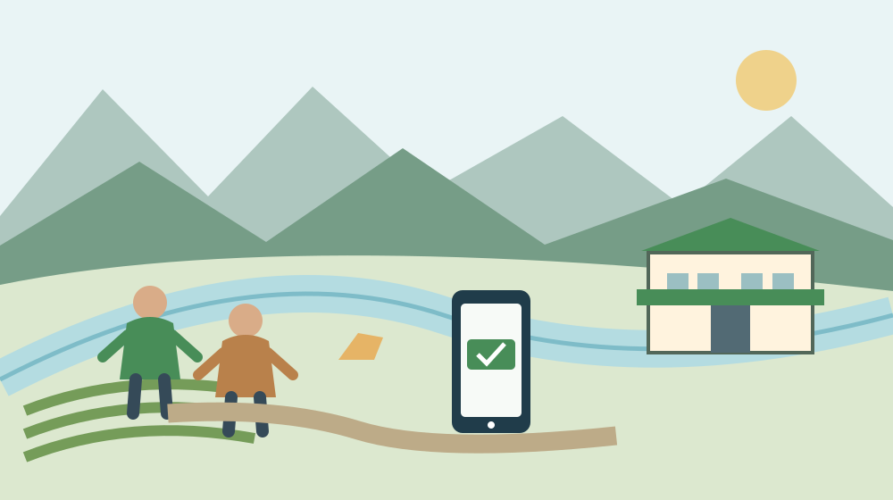
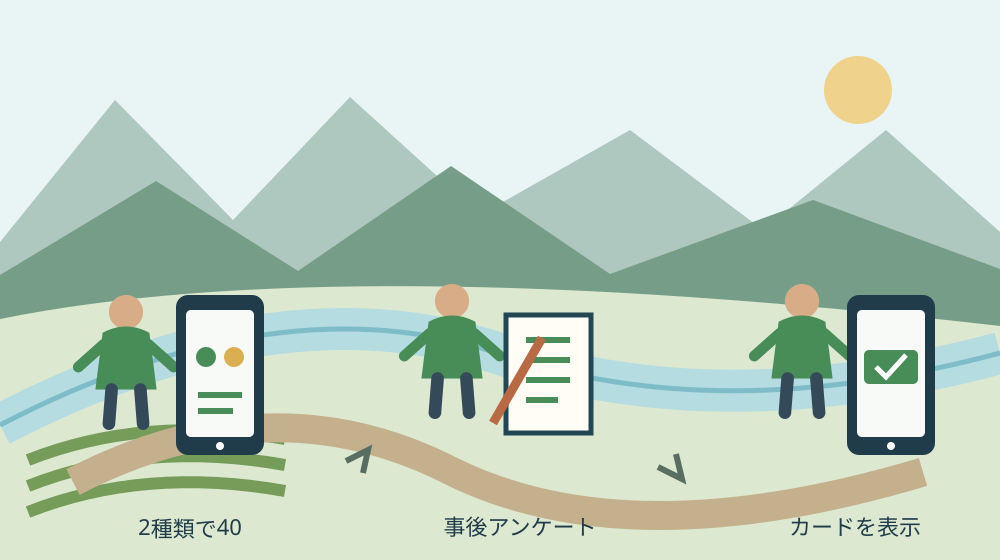

月曜・手続きと家族の段取り
森町健康マイレージ｜40ポイント後の申込み

Q. 40ポイント貯めたのに、特典のカードが分からない。次は何？
A. 令和8年度森町健康マイレージは、自己申告とスタンプの2種類を合わせて40ポイントに達した後、特典申込の案内から事後アンケートとカード申込みへ進みます。ポイント獲得は2027年1月31日まで、カード交換は2月6日までです。申込み後に森町公式LINEでデジタルカードの表示を確認します。
40ポイント達成と特典申込みは別の段階
令和8年度森町健康マイレージは、40ポイント達成後に特典申込の案内を受け、事後アンケートへ回答してカードを申し込む仕組みです。2026年10月5日に森町公式本文を確認しました。表示更新日は2026年9月3日です。達成したことだけでカードの発行まで済んだと思わず、申込み後の表示を確かめます。
健康づくりの教室、講座、健診や日々の活動を支える町の職員、参加者、協力店には準備の仕事があります。私は、数字を貯める画面だけで健康マイレージを評価しない方がよいと考えます。町の人が続けてきた活動を尊重し、その成果を特典の申込みまでつなぐ段取りとして電子化を見ます。
森町は、2026年8月1日から「ふじのくに健康いきいきカード」を電子化し、紙カードに代わって森町公式LINE内でデジタルカードを発行・提示すると案内しています。この記事は特典申込みの段階に範囲を絞ります。運動や食事の医学的な指導、全てのポイントの獲得方法を網羅する記事ではありません。
私は、本人や家族が「40になった」と報告したら、次に特典申込の案内を見たかを確認する方がよいと考えます。数字の達成は一つの区切りですが、使えるカードが表示されるまでに操作が残ります。健康のために積み重ねた行動が、申込みの見落としで特典へつながらない状態を減らすことが、今回の記事の目的です。
2種類のポイントを画面で確認する
森町健康マイレージの対象者は、18歳以上で森町在住または在勤の方です。ポイントは「自己申告ポイント」と「スタンプポイント」の2種類を合わせて40ポイントにする案内です。一種類のみでは特典に申し込めません。合計の数字に達したことと、二種類がそろったことを別々に確認します。
町の説明では、自己申告ポイントは運動や食事等の目標達成、感染症予防への取組等を自己申告で貯めるものです。スタンプポイントは運動教室や講座等への参加、血圧・体重記録シート、健診結果の提出等の方法が案内されています。個別の対象事業や提出方法は、町の当年度の一覧とLINEの画面に従います。
意外な事実は、自己申告ポイントだけで40にしても特典に申し込めないことです。町公式の質問と回答も、スタンプポイントを一つ以上獲得することが条件と説明しています。私は、合計の数字だけを家族へ伝えるより、二つの欄を一緒に見る方がよいと考えます。カードが見えない原因を、すぐ操作ミスと決めないためです。
私なら、LINE画面で合計、自己申告、スタンプの状況を本人と照合します。足りない種類がある場合は、当年度の対象と期限を確認してから次の活動を選びます。参加していない教室を参加したことにしたり、実践していない行動を入力したりする方法は使いません。実際の活動と記録が合う状態から進めます。

案内から事後アンケートとカード申込みへ
森町公式は、40ポイントに達すると特典申込の案内が届き、事後アンケートへ回答した上で「ふじのくに健康いきいきカード」を申し込む流れを説明しています。申込み後にLINEのマイレージ画面へデジタルカードが表示される案内です。達成、案内、アンケート、申込み、表示を一つの操作として扱いません。
私は、まず特典申込の案内を開けるかを確認し、次に事後アンケートへ進む方がよいと考えます。本人の回答を家族が勝手に選ぶのでなく、質問の意味を読み、本人が答えます。ここで述べる順番は町の概要に沿った整理です。実際のボタン名や画面の細かな配置を、この記事で完全に再現しているわけではありません。
事後アンケートの入力を終えたら、カードの申込みが済んだかを画面で確認します。私は、「アンケートを答えたから全て終了」と先に閉じない方がよいと考えます。申込みの案内が続くなら、その内容を読んで進めます。完了したことが分からない場合は、同じ申込みを繰り返す前に、今の画面と町の案内を照合します。
入力後はLINEのマイレージ画面へ戻り、カードが表示されるかを確かめます。町公式の説明は申込み後に表示される流れですが、具体的な反映時間までは今回の本文で確認できませんでした。私は、何分で必ず出ると断言しません。表示されない場合は、申込状況と二種類のポイントを整理して、担当係へ確認します。
1月31日と2月6日の期限を分ける
令和8年度森町健康マイレージのポイントを貯める期間は、2026年6月7日から2027年1月31日までです。カードの交換期間は、2026年8月1日から2027年2月6日まで。二つの最終日が違います。2月6日までならポイントも貯められる、という読み方にはしません。何の期限かを日付とセットで残します。
私は、予定表に「1月31日・ポイント獲得の最終日」「2月6日・カード交換の最終日」と別々に書く方法を勧めます。単に「マイレージ締切」と書くと、何を済ませる日かが家族の中で変わります。本人が40ポイントへ達したら、交換の最終日まで待つ理由はありません。案内を読んで申込みの段階へ進めます。
日付の違いを知ると、交換期間の方が長いから余裕があると感じる場合があります。私は、操作が分からない人ほど最終日へ寄せない方がよいと考えます。問い合わせる時間や、本人と家族が一緒に画面を見る時間が必要なこともあるためです。ただし、締切後の救済や特例は確認していないので、あるものとして予定を組みません。
町はカードの有効期限を発行日から1年間としています。私は、年度末で全て一斉に終わると考えず、表示されたカードの期限を見る方法を勧めます。ポイントを貯める期間、カードへ交換する期間、発行したカードを使える期間は三つの別の確認です。家族へ伝える際も、どの期限を話しているかを明示します。
森町公式LINEの入口を取り違えない
森町の「森町LINE公式アカウント」は、アカウント名を「静岡県森町」、IDを「@shizuoka-mori」と案内しています。健康マイレージの町公式ページにも友だち登録とメニューから進む説明があります。まだ入口が分からない方は、町のページにある案内から公式アカウントを照合し、健康マイレージへ進みます。
私は、検索で似た名前を見つけただけで、個人情報を入力しない方がよいと考えます。町の健康マイレージ案内から進む形なら、事業の年度と入口を同じ場所で確認できます。届いた案内の内容に疑問があれば、町の本文へ戻って読みます。
町公式のカード表示の説明は、メニューで健康マイレージを開き、「ふじのくに健康いきいきカード」を選び、有効期限を確認する流れです。私は、店の前で初めて探すより、申込みをした後に一度開く方がよいと考えます。表示できる場所を本人が覚えていれば、特典を使うときの操作の負担を減らせます。
スマホが変わったときやLINEを使えないとき、家族の端末で本人のカードを使えるか等の具体的な例外は、今回の本文だけでは確認できません。私は、スクリーンショットや別の端末で必ず代用できるとは書きません。健康こども課健康づくり係、電話0538-85-6330へ、利用する本人の事情を説明して確認します。
良い点｜持ち歩くカードをスマホで確認できる
森町健康マイレージの電子カードは、森町公式LINE内で発行・提示する方式です。私は、紙カードを持参し忘れる場面を減らせる点を評価します。スマホを持つ本人が同じ入口からポイントとカードを確認できれば、財布の中のカードを探す仕事も減ります。日々の健康づくりと利用の入口がつながる可能性があります。
ポイント達成後の案内から申込みへ進む説明がある点も良いと考えます。私は、使う人が別の様式を一から探す形より、達成したところから次の手順を読める方が動きやすいと思います。ただし、実際に案内が届いたかを本人が見なければ、仕組みの利点は届きません。案内を確認する段取りまで含めて評価します。
町公式は、LINEのマイレージ画面の店舗検索から町内の協力店を探せると案内しています。私は、カードの使い道を本人が確認できる点も評価します。利用のために町外へ必ず移動する前提にせず、行く予定の店を候補にできます。実際の割引やサービスは店ごとに確認し、どこでも同じ内容とは扱いません。
健康づくりの担い手と協力店が続けてきた努力が、本人の利用へつながることにも価値があると考えます。私は、特典を宣伝するだけより、本人が表示までたどり着ける説明を増やす方がよいと思います。参加者がカードを開ける状態になれば、店側もその人が何を提示しているかを確かめやすくなるからです。
注文したい点｜操作を助ける家族の負担も見る
森町健康マイレージの電子化では、操作を本人が進められない場合、家族が手伝う仕事が生まれます。私は、紙をなくした分だけ負担が消えるとは考えません。画面の入口、案内、アンケート、カードを家族が何度も探す状態なら、町の業務の便利さとは別に、家庭へ確認の仕事が移るからです。
一事業者として案内に望むのは、ポイント達成の説明だけでなく、カードの表示までを迷わず追えることです。私は、最後の画面が見えたかを確かめる説明があると助かると考えます。数字が40になったところで家族の支援が終わると、本人が特典申込を見落とす場合があります。最後の確認までが手続きの一部です。
電子化の利点は認めても、LINEを使えない人の代替方法が今回の本文から確定しない点は残ります。私は、紙カードも必ず発行されると補ったり、スマホがなければ参加不能と決めたりしません。使えない事情を担当係へ相談し、現行の対応を確かめます。未確認の選択肢を、案内済みの方法として紹介しないことです。
私にも、操作の手間がどの家族なら負担にならないかは一律に分かりません。家族が離れて暮らす場合、電話だけで画面を説明するのは難しいことがあります。私は、できる操作と困る操作を分けて控える方法を勧めます。分からないまま全てを家族へ預けず、担当係へ尋ねるための具体的な画面を残します。
対案・結論｜発行された画面まで確認する
森町健康マイレージで今日できる一歩は、LINE画面で二種類のポイントと特典申込の案内を確認することです。私は、合計40、二種類の内訳、案内の有無を同じ機会に見ます。案内があれば事後アンケートとカード申込みへ進み、最後に表示を確かめます。どの段階で止まっているかが分かれば、問い合わせも具体的になります。
私なら、家族のメモへ「合計確認済み」「案内を開いた」「申込みを終えた」「カードを表示できた」と段階を残します。町へ提出する表ではありません。手伝う人が交代しても、最初から同じ操作を繰り返さないためです。本人の画面で見た状態と家族の推測を分け、分からない段階を未確認として書きます。
スマホ操作の一般的な支援については、9月25日のスマホ相談の記事で、利用前の確認を整理しています。開催日は既に過ぎています。健康マイレージの特典申込みを必ず代行する窓口という意味ではありません。現在使える支援や、この事業に関する相談先は、町の現行案内で確認します。
電子手続きの登録と利用の段階を分ける考え方は、森町の公共施設予約の記事にもあります。健康マイレージと施設予約は別の仕組みですが、画面に入れたことと目的の手続きが済んだことを区別する判断は共通です。今回はカードの表示という具体的な終点を見ます。

協力店の特典と健康づくりを混同しない
ふじのくに健康いきいきカードは、協力店での割引やサービス等を受けるために提示するカードです。森町公式は特典を案内していますが、全ての店に同じ優待を約束していません。私は、利用したい店を店舗検索等で調べ、実際の条件を確認してから使う方がよいと考えます。カードの有効期限も一緒に見ます。
私は、特典があるから必要以上の買い物をする段取りにはしません。割引を受けても、予定外の支出が増えれば家計には別の負担です。元々行く店や使うサービスが候補なら、カードを出せるかを確認します。健康づくりの行動と、特典を利用する支出は別に判断できる状態を残す方がよいと思います。
カードが表示できても、それが健康状態の改善を証明するものではありません。私は、ポイントの達成を診断や治療の代わりに扱わない方がよいと考えます。体調や運動に不安がある場合は医療の専門家へ確認します。この記事は操作の段取りを扱い、個別の運動量や食事の内容を本人に断定して勧めるものではありません。
担当係へ尋ねる際は、相談窓口の予約を整理した記事のように、目的と手続きの入口を分けて考えます。私なら、ポイントの対象の質問なのか、申込後に表示されない質問なのかを最初に伝えます。健康相談そのものと電子カードの操作は、同じ問い合わせだと思い込まず説明します。
大石の視点｜電子化は最後の確認まで支える
私は大石浩之（磐田市／不動産業）です。今回の健康マイレージについて、私が家族の操作を実際に手伝ったという体験素材はありません。ここからは私の意見です。私自身は日々の仕事でAIを使っており、デジタルの道具を使うことに前向きです。その上で、操作を誰かへ丸投げして済んだ形にはしたくありません。
私は、電子化の完了はカードを表示できたところで見ると考えます。ポイントを達成した、申込みのボタンを押したという途中の報告だけでは、店で使えるかが分かりません。本人がもう一度同じ画面へたどり着ける状態まで確かめる。利便性を家庭の段取りへ戻すために、私が今回言い切りたい判断です。
AIや家族の説明は、迷う操作を整理する助けにはなります。しかし私は、現行画面を見ない案内をそのまま信じて入力する方法には賛成しません。最後に本人と担当係が確認する材料を残します。機械が出した説明と町の正式な手順が違うなら、町の現行案内を優先することです。便利な道具で判断の材料を減らさないようにします。
今日の成果は、家族が全部の操作を覚えることではありません。二種類のポイント、特典申込の案内、カード表示のどこまで進んだかを確認することです。獲得期限の1月31日と交換期限の2月6日も分けて残します。町の健康づくりを支える人と、使う家庭の負担を見ながら、最後の一画面まで確かめる段取りを提案します。
よくある質問
森町健康マイレージ｜40ポイント後の申込みについて、対象、期限、確認の入口を3問で整理します。回答は2026年10月5日に確認した公表本文に基づきます。
自己申告ポイントだけで40なら申込めますか？
森町公式は、自己申告ポイントとスタンプポイントの2種類を合わせて40ポイントとし、一種類だけでは特典に申し込めないと案内しています。公式の質問と回答もスタンプポイントを一つ以上獲得する条件を説明しています。合計だけでなく二種類の内訳を確認し、足りない場合は当年度の対象活動と期限を確かめます。
ポイントの締切とカード交換の締切は同じですか？
ポイントを貯める期間は2026年6月7日から2027年1月31日まで、カード交換は2026年8月1日から2027年2月6日までです。2月6日までポイントも獲得できるとは扱いません。40ポイント達成後は特典申込の案内、事後アンケート、カード申込みへ進み、期限内に表示を確認する段取りを提案します。
申し込んだのにカードが表示されないときは？
町は申込み後にLINEのマイレージ画面へカードを表示する流れを説明していますが、反映時間や操作の例外は本文だけでは確認できません。二種類合計40ポイント、特典申込、事後アンケート、申込みの状態を控え、健康こども課健康づくり係0538-85-6330へ確認します。重複申込みや別端末での代用を自己判断で進めないようにします。
参考にした公式情報
- 令和8年度森町健康マイレージ／静岡県森町（2026年10月確認・本文照合日10月5日）
- 森町LINE公式アカウント／静岡県森町（2026年10月確認・本文照合日10月5日）
最終確認日：2026-10-05
制度、期限、数値、画面、開催内容は変更される場合があります。最新の公式案内を確認してください。個別の法律・医療・税務・登記等の判断は、担当窓口や各分野の専門家へ相談してください。